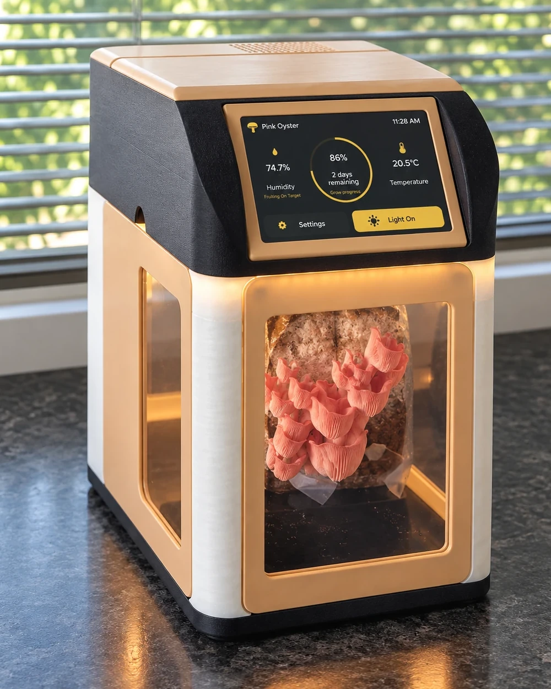

Mycelis
Oysters in the chamber.
We've grown oyster mushrooms using the prototype's automated systems. The next job is refining airflow and condensation.
See the October buildAbout Mycelis
Mycelis is a small, independent appliance project in Christchurch, New Zealand. We're building two growers: Mycelis for oyster mushrooms and Virelis for microgreens.
We design and build prototypes here and plan to do most manufacturing in-house, using selected overseas components. That keeps the growing tests, electronics and enclosure work close together.

What we're building
Growing at home can mean keeping track of a lot of little jobs. We're working on the ones an appliance can handle, like watering, while keeping the bits you'd want to do yourself: choosing what to grow, watching it change and picking it for dinner.
The details are practical. A removable window needs to come away easily. A tray needs enough room to slide out. Those are the things we keep coming back to as we test.
From the prototypes
Mycelis
We've grown oyster mushrooms using the prototype's automated systems. The next job is refining airflow and condensation.
See the October buildVirelis
We've grown Mixed Greens with some functions still controlled by hand. We're working on spray coverage and drip control.
See the November buildAvailability
Neither appliance is on sale. Join the waitlist for news as the builds move towards their first demonstrations.
We're planning supervised Sunday market demonstrations. No date is confirmed. Customer loans and in-home trials will wait until electrical safety has been assessed. Registering interest doesn't book a demo or trial.
We're planning refundable, full-payment preorders once the designs, supply and production capacity are ready. Exact terms and the opening date are not confirmed. Delivery across New Zealand is planned; rates will be confirmed before orders open.
All four models still need qualified electrical and product safety review before customer use. No formal approval has been obtained. We're planning a one-year warranty alongside your Consumer Guarantees Act rights. Final terms and care guidance will be published before sales. In the meantime, send us a question.